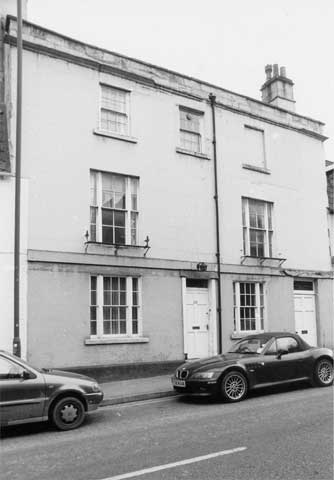

Type of building:
Mid mixed terrace
Listing:
Grade ll
Plan and elevation:
Double pile. Three storeys.
Summary of the probable main building
history:
Mid 18th Century with a late 18th to early 19th Century frontage and mid 19th
Century alterations.

North elevation
Construction:
The house seen from the street as a three storey, four bay building of typical
late Georgian style, built in large ashlar. There is a plat band separating the
ground and first floors and a parapet above a simple cornice moulding. At some
time in the past the central third or so of the cornice moulding has been cut
back almost flush with the wall. The façade is otherwise almost plain.
There is a three-light sash either side of the almost central front door, but
the symmetry is spoilt by the second door on the right hand side. The window pattern
is repeated on the first floor and on the second floor with a false window to
the right and an extra window over the door. A timber bressumer beam sits under
the plat band and over the ground floor windows and front door and extends from
the left hand end of the façade to just short of the right hand door. The
beam over this door is higher and continues the line of the plat band.
The sashes on ground and second floor are modern replacements in an approximately appropriate style. The first floor sashes are probably mid Victorian, but may be original. The glazing bars are ogee plus rounded fillet similar to the ground floor sashes to the rear , of mid Victorian date. The front door is a recent six panel but the second door is original six panel of about 1800. The front door was provided with a very shallow canopy supported by triglyph-like corbels. Fluted pilaster strips either side of the door are modern but seem to replace originals. This second door is 4ft wide and gives access to a wide through passage which originally opened to the rear. This has since been extended and closed in, sometime in the later 20th Century.
This façade belongs to the front part of the house and is a later extension of an older house set back from the road. This front block is one room deep plus a staircase block or tower at the rear. It dates from about 1790-1830, based on stylistic analogy. There seems to be no documentation as to when it was built, but the Turnpike maps have yet to be consulted.
The surviving older part is L-shaped and much modified by the addition described above and a major alteration in the mid Victorian period. The rear east-west section is the oldest and seems to be of mid 18th Century date, constructed in roughly squared and irregularly coursed rubble. The only visible feature of this phase is a blocked double window on the west wall, but a blocked door and window have been seen on the north wall during re-plastering. There is a suggestion of a large window, blocked and cut away by a later bay, on the south wall. The block consists of two rooms. The eastern one is long and narrow. The existence of a truncated stone stair at basement level suggests this was originally the staircase of the phase 1 building. There is a possibility of a basement having originally existed under the main room but this is not currently provable.
The major Victorian alteration consists of a complete rebuilding of the first floor (except for the eastern narrow room, which was nonetheless much modified) and the addition of a bay window rising through both floors. This phase was built in good ashlar. The bay was provided with a stone balconette supported on large stone corbels at first floor level. The ground floor was provided with Georgian style sashes; the first floor with double casements. Access to the new first floor was via a bridge added to the south-west corner of the staircase tower of the late Georgian front wing. The presumed staircase in the east room of the phase 1 wing was removed at this point.
The northern arm of the “L” was, from the beginning, of three storeys. It originally was reached from the phase 1 staircase, but how access to the uppermost room was arranged is not understood. The addition of the front range staircase provided access to each floor of this block via doors cut through its west walls. Doors were also cut through from each room into the eastern rooms of the northern or front range. The top floor landing has been modified in the late 20th Century in creating an extra room on that floor.
These alterations ended up with a series of rooms at a variety of levels surrounding a tiny light well. This was originally open, but at some point had a partial lean-to roof or canopy. It is currently roofed with a timber and glass roof.
The front range is roofed with a typical late Georgian collared principal rafter roof with three “trusses” linked with mortised staggered purlins, all roughly saw finished and nailed. Ceiling joists run between the raised tie beams.
The Victorian rear block is roofed with a single diagonally braced king post truss supporting a hip and a ridge and purlins carrying common rafters. All well jointed and bolted. Other roofs are modern or simple lean-to structures.
Date & development:
The original property occupied by the phase 1 house can be reconstructed from
lease plans of the early 20th Century and some topographical analysis. It appears
that the phase 1 house was set back from the centre of the street frontage of
a rectangular block of houses that ran down to the river from the road. The street
frontage properties were carved out and leased off and eventually sold as the
frontages became more valuable after the turnpiking. The property to the south
was sold off in parcels from 1904 to 1954. It is likely that the original house
was the “farmhouse” of a market garden or orchard business. The first
extension towards the street would have occupied the front garden and have been
part of the move to exploit the street frontage. It was a house from the mid 18th
Century and functioned as a doctor’s surgery during the First World War.
From the 1950s, and possibly earlier, until the later 1960s the house functioned
as a transport café and B & B, before reverting to a private residence.
Survey Drawings
| Ground
Plan |
Section |